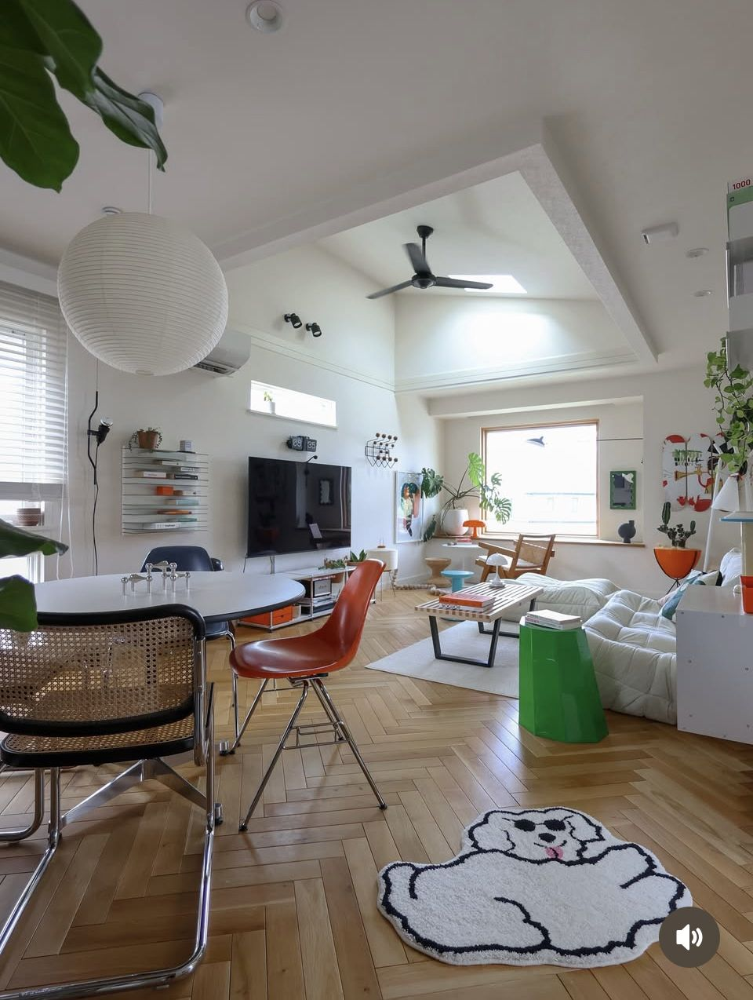
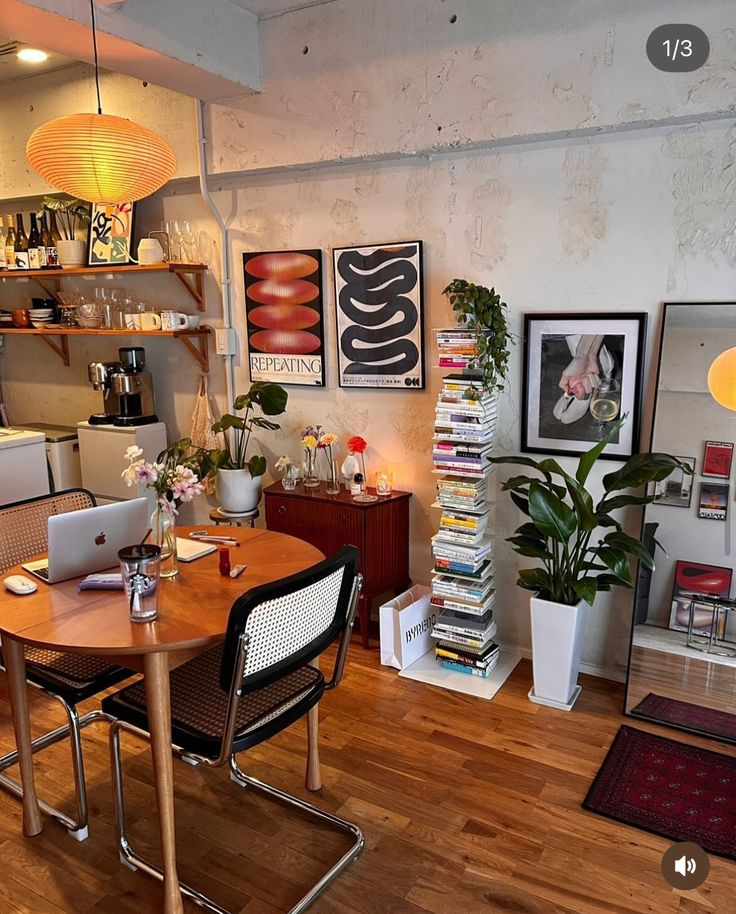

あなたのPinterestから、
「この部屋なら真似できる」を見つける。
保存したPinと自分の部屋をつなぐだけ。真似しやすい順にROOMLYが整理します。
1
Pinterest
2
自分の部屋
3
MATCH結果
① Pinterestをつなぐ
保存しているインテリアPinをROOMLYに読み込みます。
※ デモでは、連携済みの状態を再現します。
② 自分の部屋を入れる
まずは広さと形だけでOK。将来は間取り図アップロードにも対応。
③ この部屋なら真似しやすいPin
MATCH率と「なぜ合うか」「何を真似するか」を表示します。
 Graphic warm--% MATCH
Graphic warm--% MATCH合う理由：低めのソファと大きめラグで、8畳でも視線が散らかりにくい。
真似するなら
白いローソファ柄ラグオレンジ照明
 Retro city pop--% MATCH
Retro city pop--% MATCH合う理由：家具の高さが低く、差し色を点で使っているので狭い部屋でも圧迫感を出しにくい。
真似するなら
低めソファ丸い照明赤・オレンジの差し色

Cozy lighting--% MATCH合う理由：家具数を絞って、照明と植物で雰囲気を作っているから再現しやすい。
真似するなら
植物2〜3点間接照明家具量少なめ

Airy mid-century--% MATCH合う理由：壁際に家具を寄せて中央の余白を残しているので、長方形の部屋と相性がいい。
真似するなら
木の家具ロー家具中央の余白